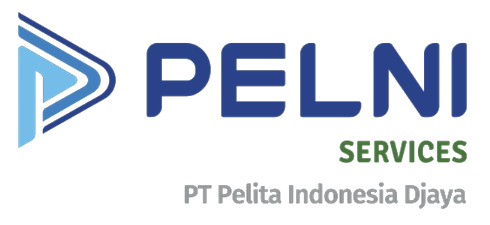
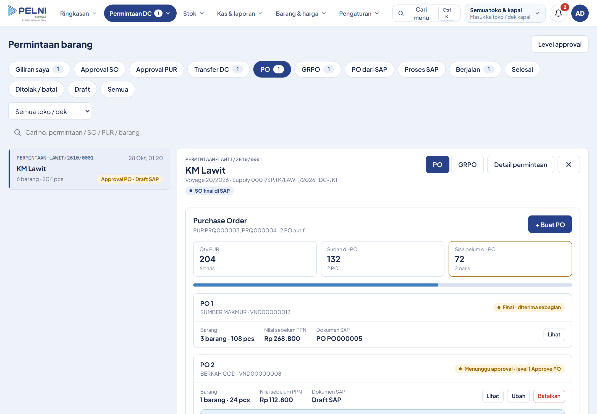
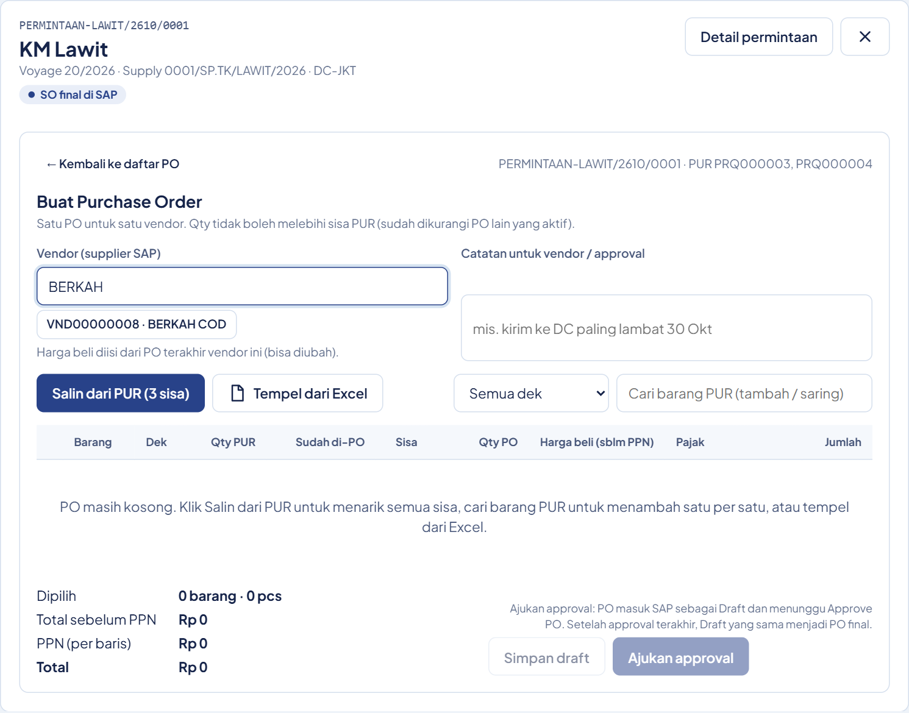
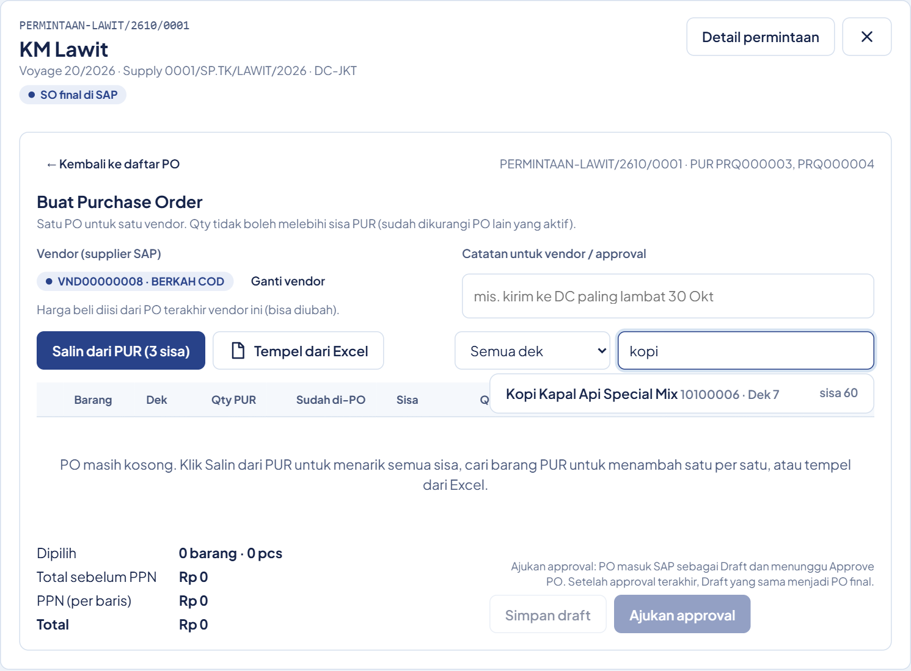
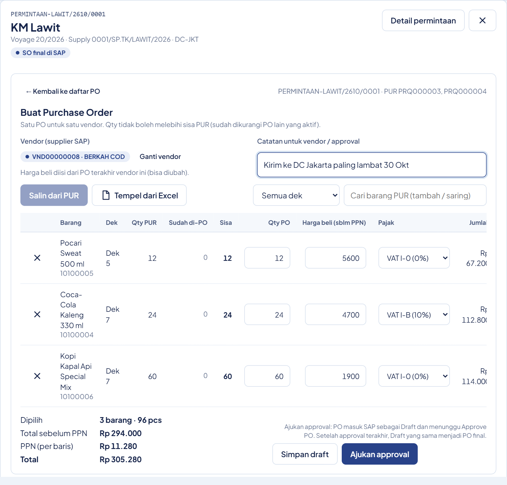
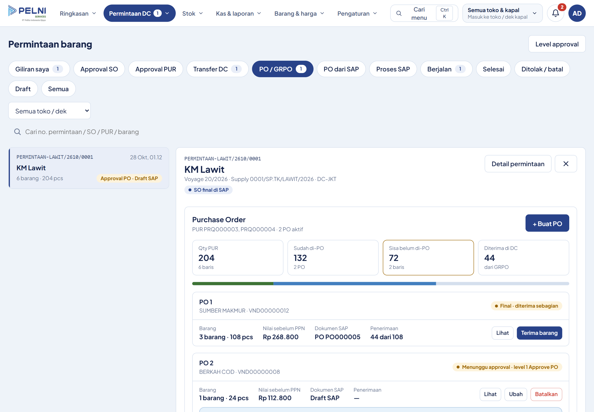
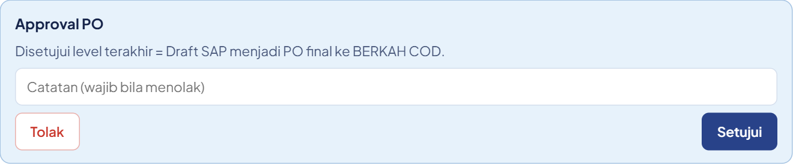
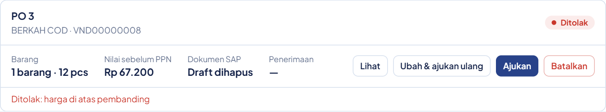

PID POS
PANDUAN PERAN
Admin Purchase & Approve PO
Membuat dan menyetujui Purchase Order
Panduan PID POS untuk dua peran admin purchase, dan Approve PO.
ALUR PURCHASE ORDER
Buat POadmin purchase
Menunggu approvalApprove PO · level 1 … n
PO final di SAPnomor PO terbit
Level 1Level 2…Level terakhir
Admin Purchase membuat Purchase Order per vendor dari sisa Purchase Request, lalu mengajukannya.
Approve PO menyetujui level demi level.
Setelah level terakhir setuju, PO menjadi dokumen final di SAP.
1
BAGIAN 1
Admin purchase
Bagian pertama, admin purchase.
ADMIN PURCHASE
Buka permintaan di tab PO

Buka Permintaan DC, tab PO, lalu pilih permintaan yang siap dibuatkan PO.
Panel Purchase Order menampilkan qty PUR, yang sudah di -PO, dan sisanya.
ADMIN PURCHASE
Klik + Buat PO
Klik Buat PO untuk membuka form baru.
ADMIN PURCHASE
Pilih vendor

Ketik lalu pilih vendor dari daftar SAP.
Satu PO untuk satu vendor.
ADMIN PURCHASE
Isi barang

Isi barangnya dengan Salin dari PUR, cari barang satu per satu, atau tempel dari Excel.
ADMIN PURCHASE
Periksa tiap baris

Periksa setiap baris.
Qty tidak boleh melebihi sisa.
Harga beli terisi dari PO terakhir vendor itu, dan pajak bisa diubah per baris.
ADMIN PURCHASE
Simpan draft atau ajukan
Tambahkan catatan bila perlu.
Simpan draft hanya menyimpan di web.
Ajukan approval mengirim PO ke SAP sebagai draft, menunggu Approve PO level satu.
ADMIN PURCHASE
Vendor berikutnya

Masih ada sisa untuk vendor lain?
Klik Buat PO lagi.
Setiap vendor punya kartu PO sendiri.
2
BAGIAN 2
Approve PO
Bagian kedua, Approve PO.
APPROVE PO
Temukan PO yang menunggu
Penyetuju membuka tab Giliran saya.
Permintaan berstatus Approval PO, Draft SAP, sedang menunggu Anda.
APPROVE PO
Periksa rinciannya
Cari kartu PO yang menunggu approval, lalu klik Lihat.
Periksa vendor, harga, pajak, qty, dan catatannya.
APPROVE PO
Setujui

Klik Setujui untuk menaikkan PO ke level berikutnya.
Di level terakhir, draft SAP menjadi PO final, dan nomor PO tampil di web.
APPROVE PO
Atau tolak dengan alasan
Untuk menolak, isi catatan alasannya, lalu klik Tolak.
APPROVE PO
PO ditolak kembali ke admin purchase

PO yang ditolak kembali ke admin purchase, lengkap dengan alasannya.
Perbaiki lewat Ubah dan ajukan ulang.
Approval mulai lagi dari level satu.
PERLU DIINGAT
PO final tidak bisa diubah atau dibatalkan dari webPembatalan PO yang sudah final dilakukan di SAP.
PO menunggu approval diubah?Approval mulai lagi dari level 1.
Ingat, PO yang sudah final tidak bisa diubah atau dibatalkan dari web, hanya di SAP.
Dan bila PO yang menunggu approval diubah, approval mulai lagi dari level satu.
PID POS
Selamat bekerja dengan PID POS
Admin Purchase & Approve PO
Selamat bekerja dengan PID POS.